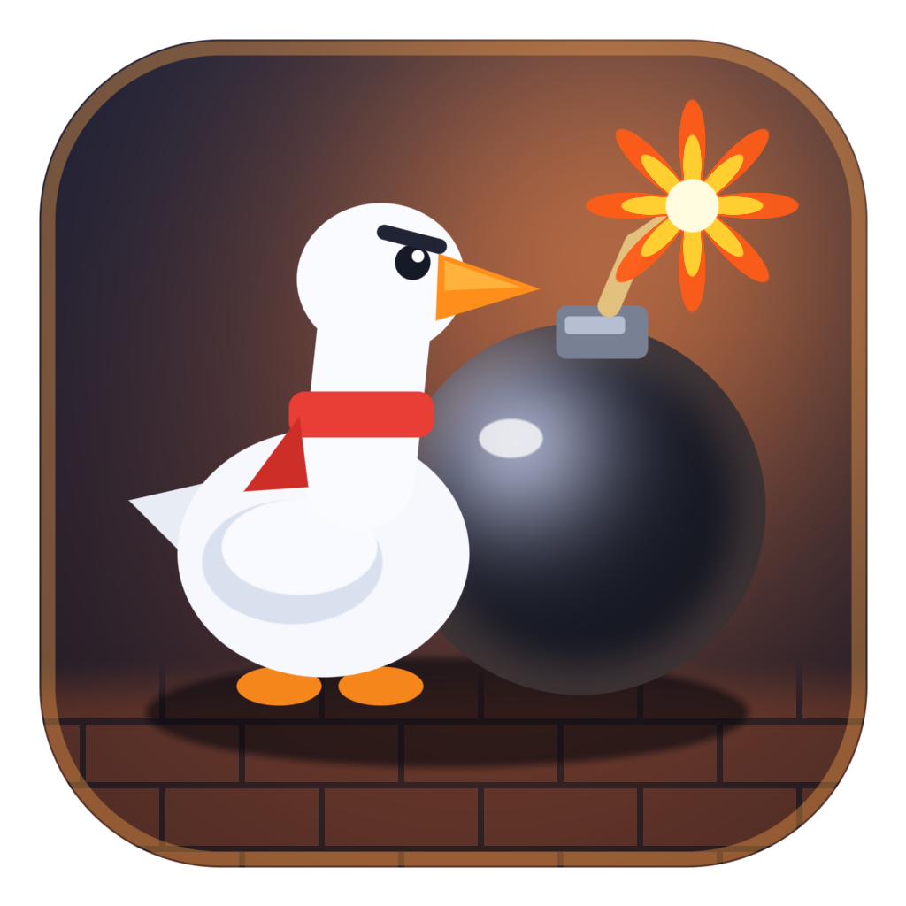
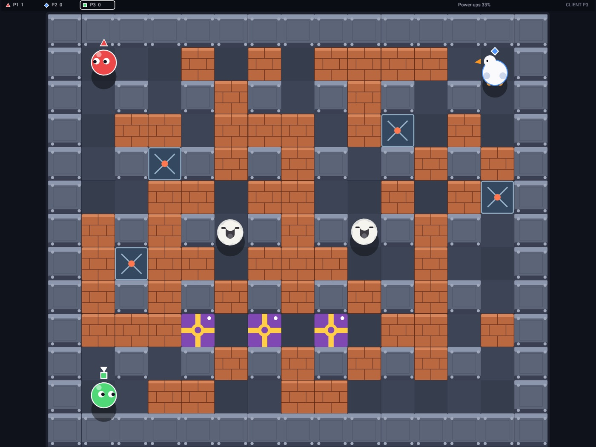

Goose BombermanFast, self-hosted Bomberman for up to four players on Mac and Windows. Battle across four biomes and four game modes with 15 power-ups, flaming sheep, pitch-black nights, and instant kill replays—no accounts, no servers to rent, and automatic updates.
Free and open source. Or use the one-line auto-updating installer below.

The easiest way to play. Each command grabs the latest release, avoids OS quarantine warnings, creates a clickable app icon, and auto-updates every time you launch.
Apple Silicon (M1 or newer). Open Terminal and paste:
curl -fsSL https://colemanbroad.github.io/bomberman/play.sh | shAdds Bomberman to ~/Applications (and Spotlight) and opens straight into the start menu. Next time, just double-click the icon—updates happen automatically.
Windows 10 or 11 (64-bit). Open PowerShell and paste:
irm https://colemanbroad.github.io/bomberman/play.ps1 | iexDrops a Bomberman icon on your Desktop and launches the start menu. Double-click it anytime to stay up to date. Allow Windows Firewall access when prompted.
No terminal commands required. Launch the app to pick your name, farm animal, and whether to play Solo, Host, or Join—your preferences and last server are saved automatically.
Pick how friends connect in the Start menu, or switch live anytime inside Host Settings:
8080 and share your address../bomberman-portable host --upnpPower users can still launch directly via CLI: host [--port N] [--upnp | --lan | --playit ADDR].
Paste the host's IP or host:port (like 192.168.4.46 or foo.gl.at.ply.gg:24680) into the Start menu and hit Join Game.
./bomberman-portable join 192.168.4.46Client-side prediction keeps movement snappy over Wi-Fi and internet links. Low-latency 60 Hz UDP activates automatically (showing UDP in the corner), with seamless WebSocket fallback if UDP is blocked.
Switch modes between rounds right inside Host Settings.
Classic last-fighter-standing mayhem. Build win streaks and trigger a full-screen spotlight victory dance every 5 wins.
Squad up with team-colored rings and shared victories. Friendly fire is on by default for classic chaos—or toggle it off in Host Settings.
One fast, invisible runner tries to survive 60 seconds while everyone else hunts them down with traps and crossfire.
One supercharged hunter stalks a squad of invisible runners who shimmer faintly only while moving—steal power-ups before the Predator does.
Fifteen power-ups and weapons—every single one toggleable by the host, alongside fuse, fire duration, and blast range sliders.
Pick your look and themed bombs in Profile: Goose (eggs), Squirrel (acorns), Baby (diapers), Cow (cow patties), Pig (bacon), or Farmer (hay bales).
Fight on Tropical Island, Forest, Mountains, and Desert—each with its own soundtrack (N cycles tracks, or drop in music.wav). Press T anytime to toggle detailed GPU textures.
Fluffy sheep trot around corridors like living roadblocks—until a blast sets them on fire! Flaming sheep sprint at double speed and roast anyone they touch.
Hide from enemies inside burnable Forest Brush, punt bombs and fire right through Semi-Permeable Grates, and trap corridors with edge-only Chain-Link Fences.
Flip on Day/Night Cycle in Host Settings. When night falls, crickets chirp and blocks and bombs vanish—only glowing eyes and brief explosion flashes light the dark.
Every round ends with a slow-motion Kill Replay Reel. Open Replays to re-watch or save any kill from the session to disk, and tap Tab for kills, suicides, and sheep-death stats.
Eliminated early? Immediately return as a controllable Black Sheep to block rivals, or hit Space to phase through walls as a fog-leaving Fog Ghost.
Tune everything live in Host Settings: mode, map, portals, drop rate, wall regrowth, all 15 power-ups, plus sliders and randomize toggles for bomb fuse, fire duration, and blast extent.
| Key | What it does |
|---|---|
| ← ↑ ↓ → or W A S D | Move (or steer an active Heat-Seeker Missile) |
| Space | Drop a bomb, launch/detonate a missile, switch Black Sheep / Fog Ghost when dead, or skip a replay |
| F | Fire active weapon (Fireball Thrower or Flamethrower) |
| Q / Shift+Q | Place a destructible brick ahead / place a permanent chain-link boundary fence |
| E / X (or Shift+Space) | Plant a proximity mine |
| Shift | Hold position: freeze in place and block rivals or kicked bombs |
| T | Toggle Detailed Textured Graphics |
| Tab | Show / hide Session Kill & Suicide Stats |
| M / N | Mute music / cycle built-in tracks |
| Esc | Close open menus or replays, or quit |